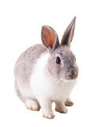

-
Lamouruex Clinic & Pet Shop
Lamoureux Pet Shop is a pet shop that has been in operation for almost 4 years since the beginning of 2015. This pet shop is a family business and has many outlets in Kedah. Lamourex Pet Shop is a small shop but has full services that deal with routine checkup for pets as well as emergency cases. In addition, Lamoureux Pet Shop also provides services such as pet hotel, pet grooming, selling pet medicines and selling pet equipment such as dry food, wet food, pet cage and more. For now, Lamourex have one veterinarian, Dr. Megat Iskandar. The veterinarian at Lamoureux Pet Shop is experienced in all kinds of conditions and treatments. All staff at Lamoureux. Pet Shop are experienced in managing pets and know how to handle situations if anything happens to them. Lamoureux Pet Shopis a very comfortable pet shop for people and pet, kids friendly, and have a calm environment.
Featured Topic
-

What they need
You can meet a pet’s basic welfare needs by giving it food, water, ventilation, and by protecting it from injury or ill health. Taking care of your pet also means meeting a pet’s emotional needs, too.
-

Why grooming
Good grooming is about more than just having a pretty pet. You're also tackling potential health conditions. The professional grooming to maintain and upkeep healthy skin and coat.
-

Something good
Many health benefits of owning a pet. They can increase opportunities to exercise, do activities, and socialize. Playing with pets can decrease blood pressure, cholesterol levels, and triglyceride levels.
-

Why vaccine
Pet vaccinations help prevent pet diseases, and can help you avoid costly treatments for preventable animal illnesses. These vaccinations protect your pet from many of the diseases.